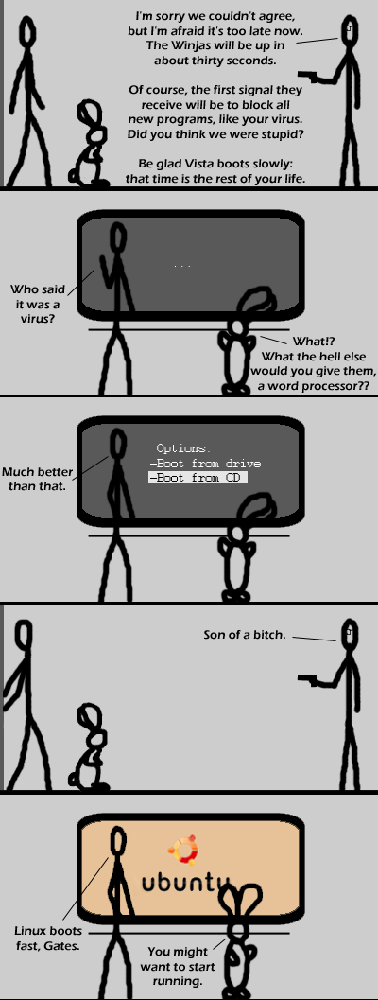

Comic JK 98
When I Feel Like It
⇤
<
?
>
⇥

⇤
<
?
>
⇥
Forum
.
RSS
.
Digg
.
Facebook
.
Reddit
.
Twitter
.
Stumbleupon
VICTORY! Your mother boots up your friends' dicks fast. But Ubuntu boots in the same time as my Vista setup. ;.; > What version of Ubuntu, and what filesystem? 9.04 on ext4 should boot significantly faster. >>I don't use Vista anymore, but Ubuntu 11.04 boots a bit slower than Windows 7 on my machine (although I am using Wubi). This comic was funny, then it just became a ridiculous (baseless) anti-windows-plotline-rant. Sigh. >Baseless? Do you know anything about Microsoft? >>Ridiculous anti-windows-plotline-rant? Do you know anything about comedy? >>>Comedy? Do you know anything about... wait, that doesn't work. >>>>Sigh? Do you know anything about... neither does that. >>>>>Ellipsis? Do you know anything about... Ah damnit. >>>>>>anti windows on the internet? god forbid. als, it's not really that critical to the plot. it could be anti-mac or anti fluffy toys just as easily. There IS a Windows that can say that - Windows 2.1 (386)! Trouble is, it sucks (it's still better than Vista though...) > IT IS, RIGHT!? I feel that ``Son of a bitch'' should all be one word here. >Linux boots fast Fast is not an adjective (adverb), no matter how hard webster tries to define it as such. Oxford sets the rules, and Oxford says that the adverb is "quickly". Fast is an adjective and as such cannot be used to describe the manner in which something does something. The correct phrase would be "Linux boots quickly". Sorry. I love the comic. >Yeah, but since when did ordinary people really care for language rules? It's unfortunate, but people don't pay much attention to a lot of them. > Check your sources. Oxford may be a good standard, but English isn't a defined language governed by a board (like most other, sensible languages). It's not even an informal thing like Italian has going for it. standards.... lol read the comic before what bill says about standards! ALSO UBUNTU saves the day! I love ubuntu. always will. >> You're all wrong. Webster defines the language called "American", in which "fast" can be used as both an adjective and adverb. In English, defined by Oxford, "fast" is only an adverb. I prefer gentoo. *raises flame shield* - ezziey > I prefer not spending three years compiling for a 0.00001% speed increase. >